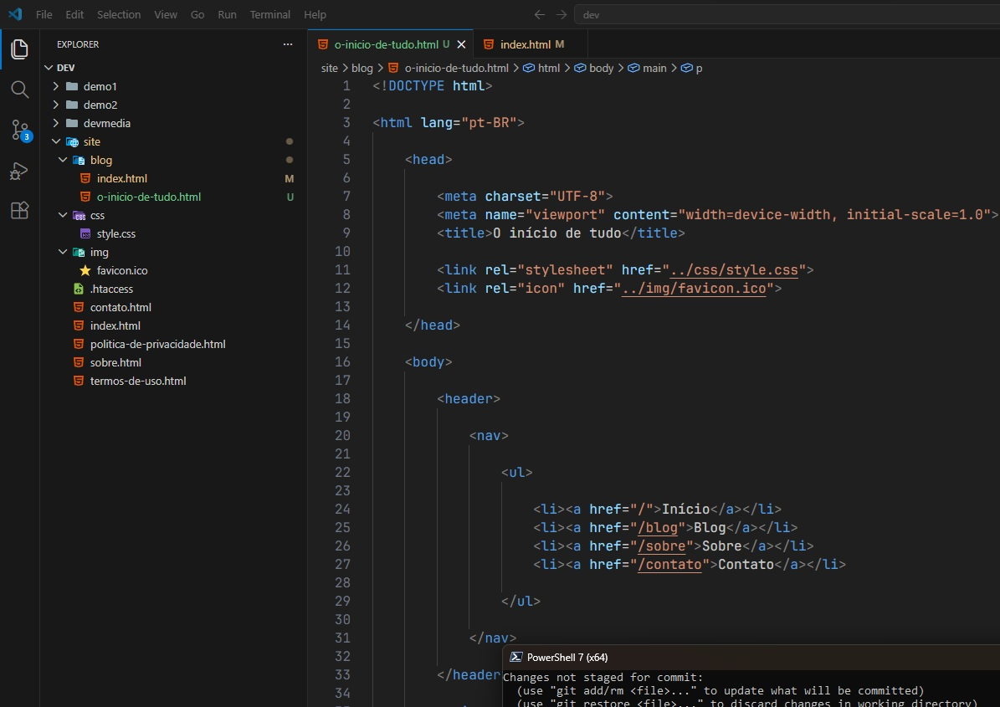
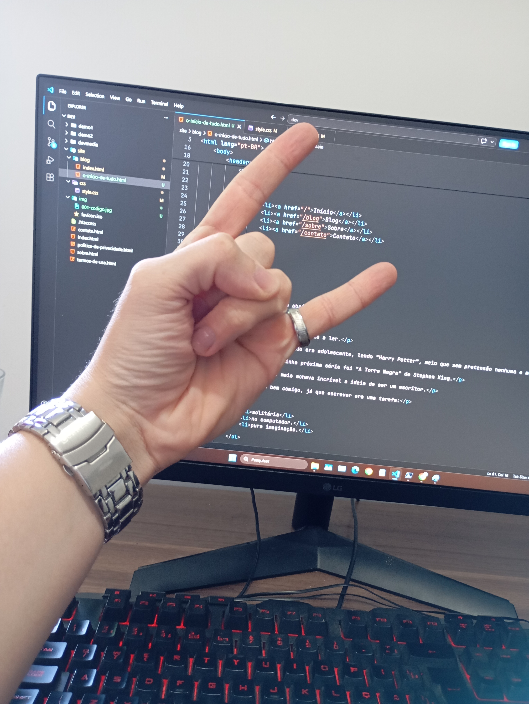

Sexta-feira 10 de abril de 2026
O início de tudo
Este ano decidi que voltaria a ler.
Comecei o hábito quando era adolescente, lendo “Harry Potter”, meio que sem pretensão nenhuma e me viciei.
Gostei tanto que minha próxima série foi “A Torre Negra” de Stephen King.
Quanto mais lia, mais achava incrível a ideia de ser um escritor.
Combinava tão bem comigo, já que escrever era uma tarefa:
- solitária
- no computador.
- pura imaginação.
Tomei a decisão naquela época: ia escrever meu primeiro livro!
Escrevi? Sim!
Gostei? Não!
Abandonei o sonho, o hábito de leitura e o manuscrito. Mas as ideias de histórias nunca me deixaram.
Me arrependo, mas este ano voltei a ler. E tenho TANTA coisa pra ler, que nada melhor do que registrar isso em um cantinho na internet que é só meu.
Tão meu que estou escrevendo cada página com HTML puro e um pouquinho de CSS. Futuramente vou


Poderia ter começado só instalando o Wordpress e focar no conteúdo, mas que maneira melhor de praticar desenvolvimento web? do que escrever um site inteiro página por página só no código!
Chatgpt tem sido uma ferramenta incrível de aprendizado. Fundamental para me ajudar a fazer deploy do meu computador para o github, direto para minha hospedagem.
Quem manja pode conferir o repositório aqui github.com/guilhermevardacosta Está tudo lá.
Até mais!